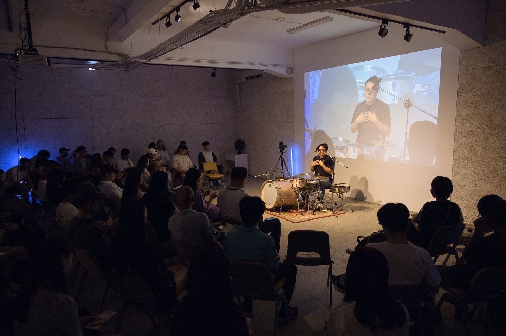
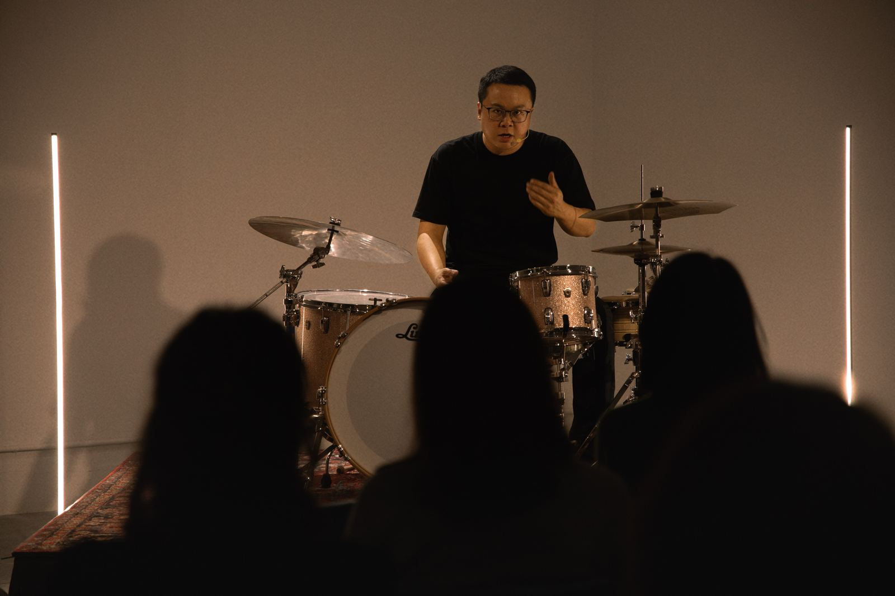
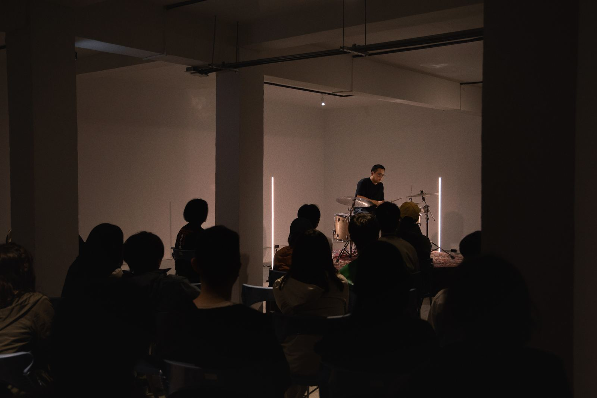
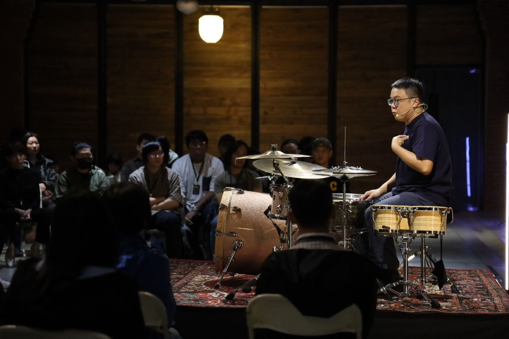
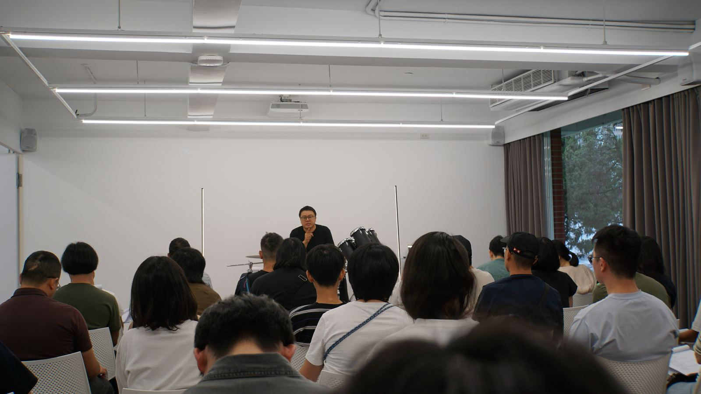
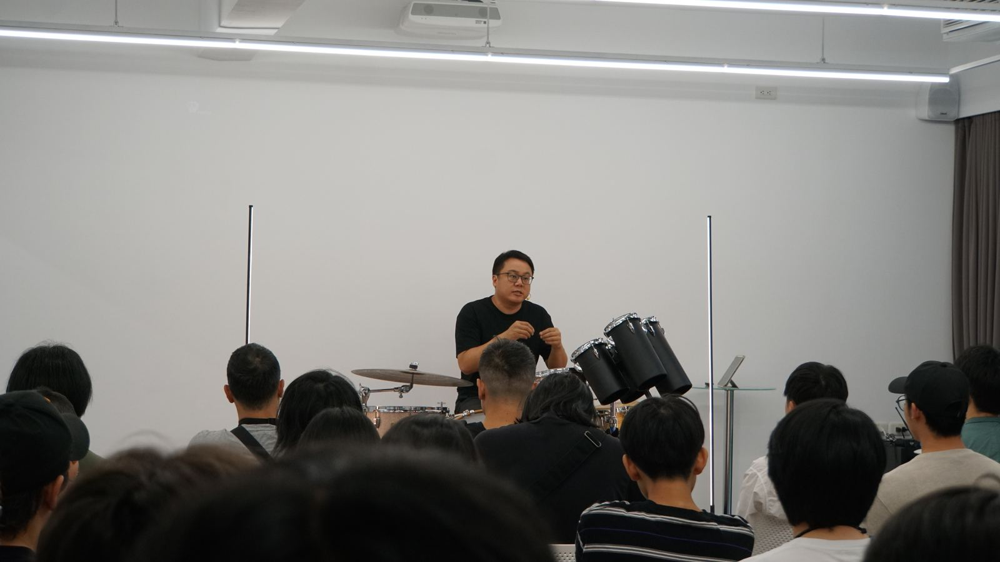

About the Studio
YICHENGLESSONSKeep playing and enjoy the rhythm
由爵士鼓教育者王苡丞創立的 YICHENG LESSONS，以專業教學與系統化學習為核心，致力於讓爵士鼓教育更有深度與價值。從一對一個人指導、小班團體課程，到累積數十場的爵士鼓專業講座與訓練經驗，我們將演奏知識、節奏觀念與實際應用轉化為清楚而有效的學習方式。不只是學會演奏，更希望每位學習者都能真正理解音樂，建立屬於自己的節奏能力。
- 專業講座與訓練數十場爵士鼓專業講座經驗，深化節奏理解與實務應用
- 小班團體課程透過系統化教學與互動學習，建立扎實的音樂基礎
- 一對一個人指導依照個人程度與目標，規劃專屬的學習方向





